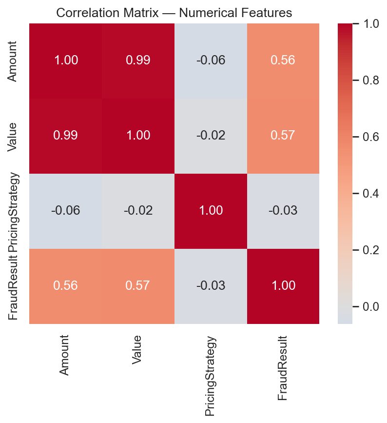
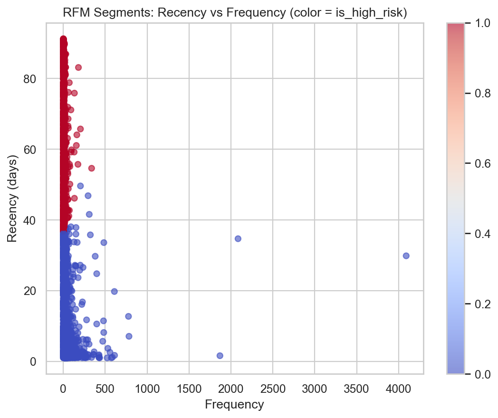
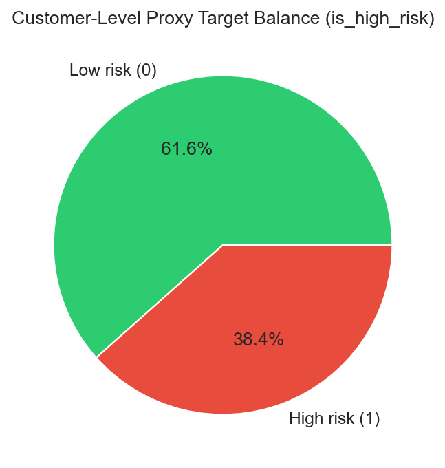
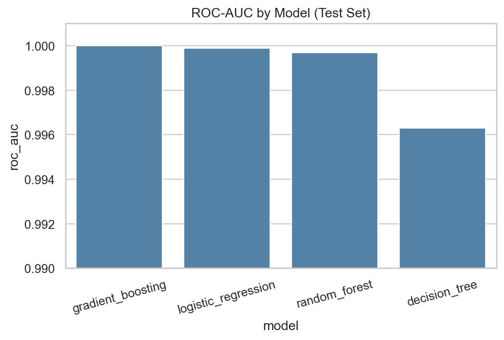

The constraint
The Xente extract has rich transaction history but no long-horizon default outcome. Without a supervised target, the bank cannot train a ranking model for credit decisioning.
10 Academy · Week 4 · Portfolio Case Study
An end-to-end probability model for Bati Bank built on alternative Xente transaction data — with RFM proxy targets, regulated-model thinking, and production deployment.
Business problem
Bati Bank needed a governed way to rank applicants using digital transaction behavior — while staying honest about Basel-style expectations for transparency and documentation.
The Xente extract has rich transaction history but no long-horizon default outcome. Without a supervised target, the bank cannot train a ranking model for credit decisioning.
Build customer-level features, create an RFM + K-Means proxy target
(is_high_risk), benchmark interpretable and complex models, then ship scoring
via FastAPI and Docker.
Prefer documented assumptions, WoE/IV screening, and a logistic baseline for audit dialogue — while using gradient boosting as the performance challenger for ranking.
System design

Exploratory findings
Fraud rate
0.20%
Transaction-level fraud is rare — ranking metrics matter more than accuracy alone.
High-risk customers
38.4%
RFM cluster 0 (least engaged): 1,438 customers with ~62-day average recency.
Amount ↔ Value
r = 0.99
Near-redundant monetary signals — avoid double-counting in linear scorecards.



Model comparison
Stratified 80/20 split, fixed random_state=42, RandomizedSearchCV. Winner: Gradient Boosting — with Logistic Regression kept as the interpretable reference.
| Model | Accuracy | Precision | Recall | F1 | ROC-AUC |
|---|---|---|---|---|---|
| Gradient Boosting | 0.9947 | 0.9931 | 0.9931 | 0.9931 | 0.99995 |
| Logistic Regression | 0.9907 | 1.0000 | 0.9757 | 0.9877 | 0.9999 |
| Random Forest | 0.9973 | 0.9965 | 0.9965 | 0.9965 | 0.9997 |
| Decision Tree | 0.9947 | 0.9965 | 0.9896 | 0.9930 | 0.9963 |


High scores partly reflect overlap between RFM-derived labels and activity/time features. Treat them as an upper bound on proxy separation until true defaults are available.
Production surface
/health and /predict return risk probability + Low/Medium/High band
Artifacts
Deep-dive write-up, reproducible code, and deployment config — ready for reviewers and hiring managers.